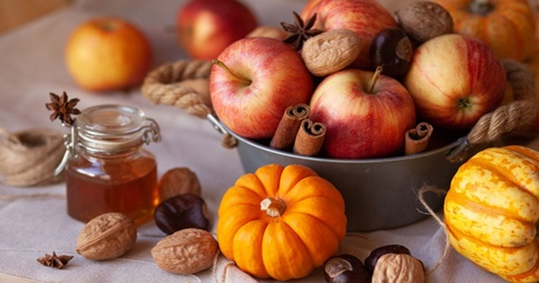
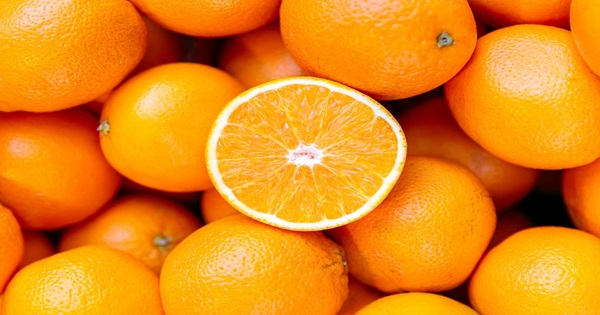
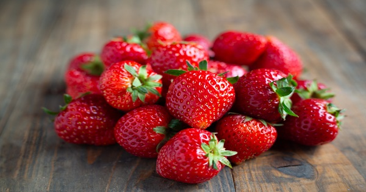
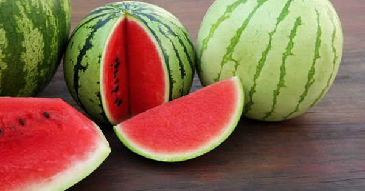

Fall Fruits
First on the list is Fall fruits, which is my personal favorite of the bunch.
Ranging from apples to cranberries to pears. Even pumpkins and squashes and yes these are also fruits! Fall really gives just about everything one could want. Especially for that delicous thanksgiving meal.
Winter Fruits
Next on the list is Winter fruits! Now that winter is here and all one wants to do is cozy up indoors, nothing beats a nice sweet fruity snack!
Your choices include oranges, kiwis, grapes and bannanas. Yummy!
Spring Fruits
Oh boy, now that the sun is starting to peak out, and everything once again starts to turn green now too starts the craving for spring treats!
Now here come some heavy hitters in the fruit world, some instant classics one could say. You have strawberries, blueberries, mangos, pineapples the list goes on.
Summer Fruits
Now I imagine this is probably most everybody's favorite season for fruity snacks. Nothing quite beats something cold and sweet on a hot summer day.
Coming in at the number one choice for summer fruits has to be the iconic watermelon, but thats not all! Summer provides raspberries, peaches, blackberries, cherries and many others.
I hope everyone can now share in some sweet treats and enjoy their day! Thank you for listening!